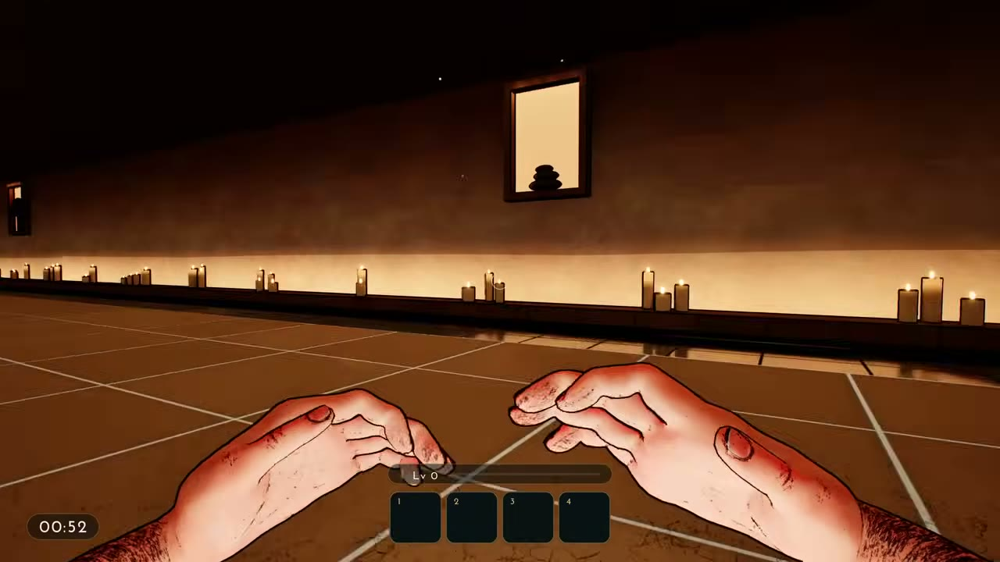
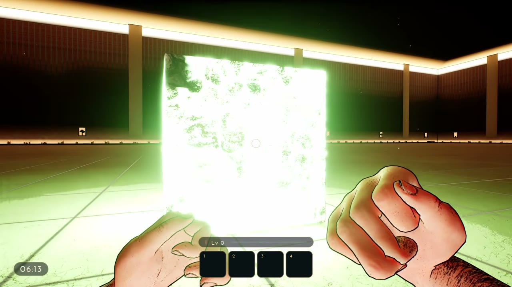
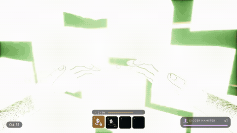
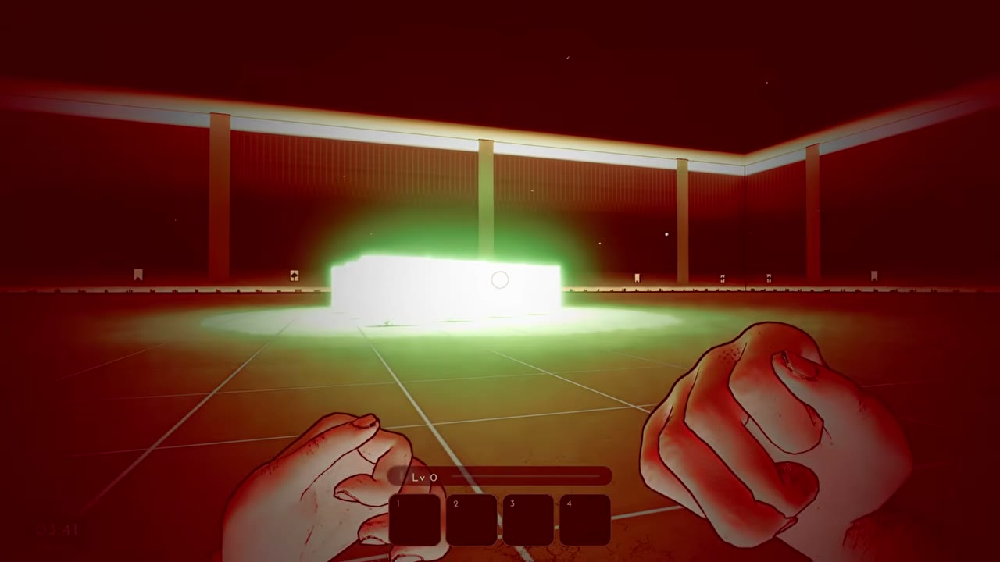
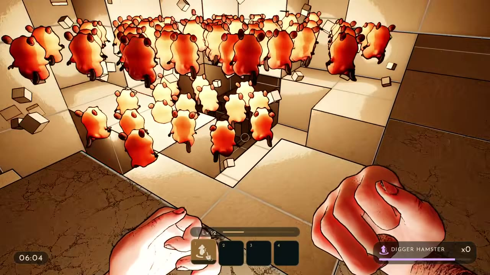
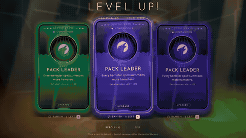

Find the Box review: a cozy digging game I modded into a horror game

Find the Box is a cozy first-person digging game from Taco Games, out on Steam since November 4, 2026. A box is buried in a solid cube of more than a million blocks in a candlelit spa hall, and you punch your way to it. You can play with no upgrades, or turn on upgrades, level up and pick spells and perks. The real game has no enemies and no fail state. Taco Games sent me a key before launch.
My first attempt ended with the game telling me YOU ARE HAPPY. Before that I complained that nobody put a roof on the place ("What if it rains?"), and the question came up of why this guy's right hand is so much bigger than his left. I decided it's his rabbit-pulling hand.

By my second attempt my mods were on and the game played backward: instead of me finding the box, a cluster of glowing boxes comes looking for me. They slide after me and surround me. The game crashed once while my mods were on, and I came back after a "fatal error." Later my sky abduction mod lifted me into the sky and dropped me outside the map.


My only defense was hamsters. The game has hamster spells, and I put a hamster mod on top, so the place flooded: first dozens of orange hamsters digging out the bottom of the world, then a whole wall of them. I also decided hamsters aren't made of ham: "More like fraudster." By the end I was yelling that this is a horror game, then I gave in to peer pressure and let the boxes take me.


The game has no enemies and no fail state, so every box that chased me was my mod. As shipped, it is a calm, goofy digging toy, and the spa hall, the hamster spells and the YOU ARE HAPPY screen are its best jokes. Nothing pushes back, which is why I gave it something to run from. Store page: Find the Box on Steam
More games I broke with mods: the Mayhem À La Carte rat army, the CRACK speedrun and Alien: Isolation with Thomas the Tank Engine.